Added
Private Islands
Get your very own Private Island!
Plant the new types of seeds here!
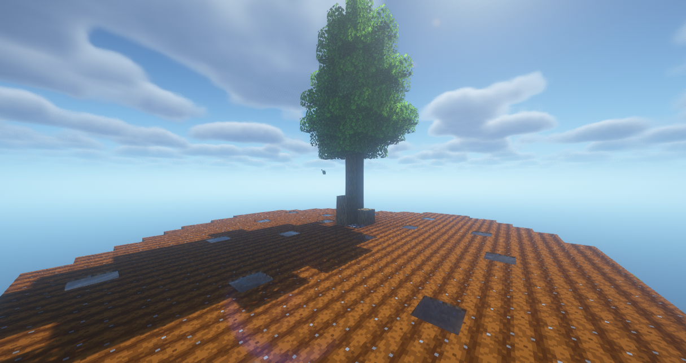
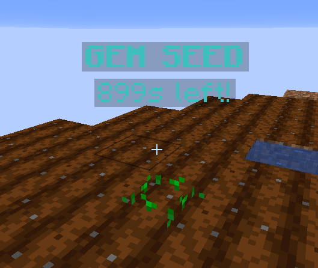
Echoon Seed
The first seed available for your Private Island!
The Echoon Seed drops randomly from ANY crop!
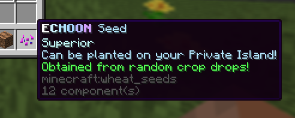
Echoon Leaf
A new mythical item has landed!
The Echoon Leaf drops from harvesting Echoon Seeds!
Use these in the new Season Shop!
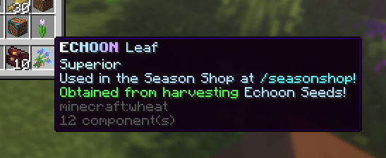
Season Shop
The Season Shop contains tons of useful gear and some of the new best items!
Including RAINBOW Token, Strength and Regen potion and more!
You won't be able to purchase everything instantly though.
Stock is individual per-player unlike Travelling Merchant.
Restocks every 30 minutes!
Better items require more Respect Points, which are earnt through purchasing items.
More expensive items reward more Respect Points!
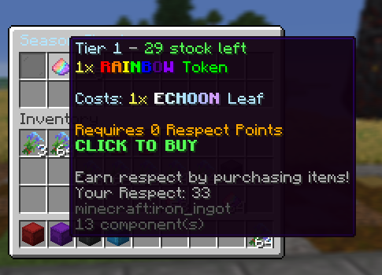
Shady Merchant
A secret merchant has revealed itself behind the Barn..
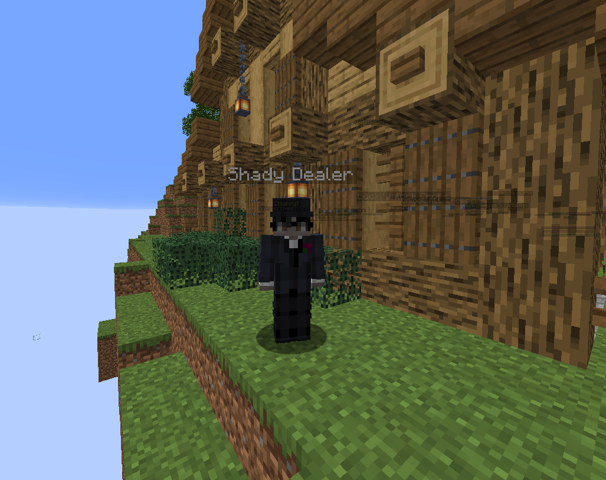
Shulker Boxes!
Too many items? This is for YOU!
The Shady Merchant is selling Shulker Boxes, each that can be filled with a certain category of items!
This update introduces 4 types:
Potions Shulker - Store all potions - 20,000 Gems
Wardrobe Shulker - Store armor and weapons - 35,000 Gems
Item Shulker - Store sprinklers, farming tools and more - 15,000 Gems
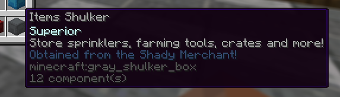
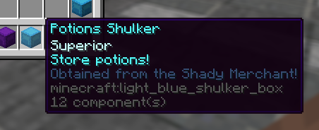
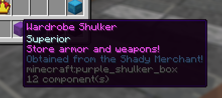
Blast Token
Blast the crop fields!
Collect Blast Tokens from Travelling Merchant, Season Shop and more!
When in use, farms 4 crops at once!
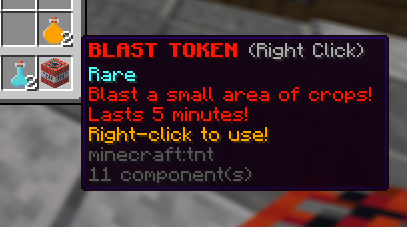
Crop Duster
Yes.. we added the CROP DUSTER!
These can be found in Season Shop!
When in use, instantly farm a LARGE RADIUS of crops!
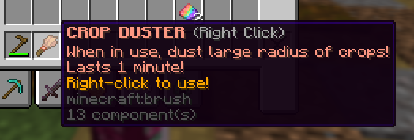
Active Effects Menu
The Potion System has been completely re-built!
We're able to expand the system extensively.
You can now view your active status effects at /statuseffects
Note that this does not display Vanilla Potion effects.
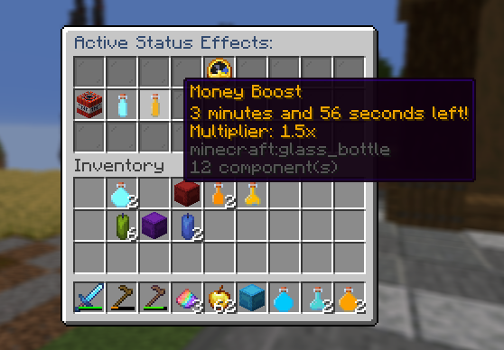
Gem Seeds
Another seed for your Private Islands!
Obtained from the Luxuriant Charm!
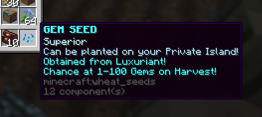
Ultimate Seeds
Another seed for your Private Islands!
Obtained from Tier 3 Travelling Merchant!
Depending on your Rebirth and Farm Level receive 20 OP crops!
Small chance at the Exclusive Chorus Fruit!
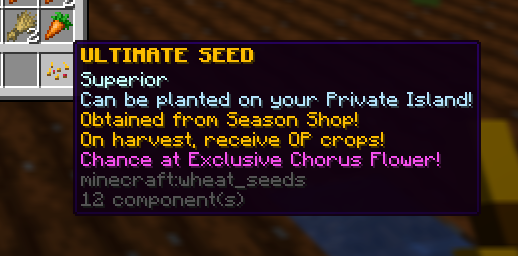
New Charms
Boost your Private Island!
2 new charms have been added:
Harvester Fortuna - Chance for doubled items when harvesting Private Island Seeds - obtained from Season shop
Spring Harvest - On plant when equipped, seeds on Private Island grow 2x faster - obtained from the Season shop
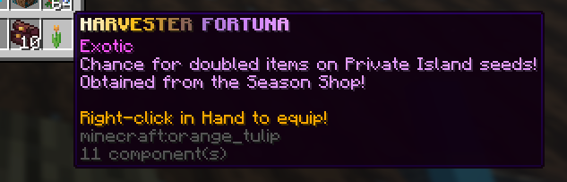
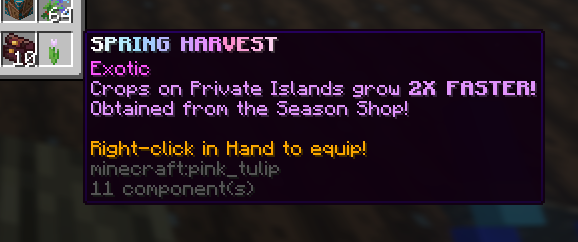
Global Competition
Hopefully this one is easier..
Collectively harvest any seeds on Private Islands to contribute!
Everyone online will receive 20X ULTIMATE SEEDS!
Ensure you're always online to not miss out!
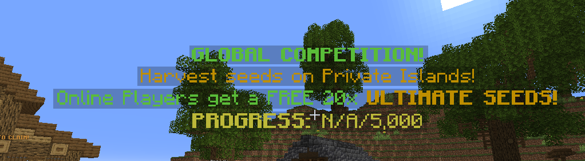
Changed
- Luxuriant Charm new loot table: 40% - Money Lootbag, 40% - Gem Seed, 20% - Diamond Lootbag
Fixed
- Various potion lore mismatches
~ Thank you all! Next week: 5000 Unique Joins event!